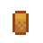
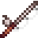
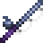
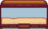

Balıkçı
| Balıkçı | |
 | |
| Açık Saatler: | 09.00 - 17.00 |
| Kapalı Günler: | Yağmur yağmayan cumartesileri (bina açıktır ancak satış yapılamaz) |
| Oturanlar: | |
Balıkçı, Willy'nin evidir. Pelikan Kasabası'nın güneyindeki kumsalda iskelelerin üzerindedir. Oyuncu, Willy'nin Bahar 2'de gönderdiği mektubu okumamışsa dükkâna girilemez. Cumartesi günleri yağmur yağıyorsa kapı açık olsa da dükkândan bir şey satın alınamaz.
Willy; oltalar, yemler, olta takımları, akvaryumlar ve yengeç çömleği gibi balıkçılık ile ilgili çeşitli erzaklar satar. Olta takımı gibi bazı ögeler yalnızca oyuncu belirli bir balıkçılık seviyesine ulaşmışsa satın alınabilir. Gerekli yetenek seviyesine ulaşıldığı anda satın alınabilir hâle gelirler ve sonraki günü beklemeye gerek yoktur. Bakır Eleme Tavası ve Devasa Akvaryum gibi diğer ögeler ise oyuncunun belirli görevleri tamamlamasını gerektirir.
Stok
Alabalık Çorbası, Seçili Yem, Bambu Olta, Talim Oltası, Küçük Akvaryum, Büyük Akvaryum, Asılı Balık ve Dalyan Çift Kişilik Yatak ögeleri; Balıkçı açıldığı gibi stokta belirir.
| Görsel | İsim | Açıklama | Fiyat | Gereken |
|---|---|---|---|---|
| Balık Tütsüleyici (Tarif) | Balık Tütsüleyici yapma tarifi. | Yok | ||
| Alabalık Çorbası | Çok tuzlu. | Yok | ||
| Yem | Balıkların daha çabuk yakalanmasını sağlar. Öncelikle oltaya takılmalıdır. | 2 | ||
| Lüks Yem | Balıklar daha çabuk yemi ısırır, ayrıca 'balıkçılık çubuğunun' boyutu artar. | 4 | ||
| Seçili Yem | [balık] yakalama şansını artırır.
Willy, her gün belirli bir balık için Seçili Yem satar (örn. Kedibalığı Yemi, Sardalya Yemi). Fiyatı ise yemin satış fiyatının iki katı olur. Daha fazla bilgi için Seçili Yem bölümüne göz atın. |
Yok | ||
| Yengeç Çömleği | Yemle doldurulup suya yerleştirilir ve ertesi gün kontrol edilir. Akıntılarda, göllerde ve denizde kullanılabilir. | 3 | ||
| Radar Mantarı | Yakalamadan önce hangi balığın takıldığını gösterir. | 6 | ||
| Yapay Yem | Biçimi sayesinde suyun içinde döner. Balık yakalama oranını birazcık arttırır. | 6 | ||
| Tuzaklı Mantar | Balıklar makara ile sarılmıyorken daha yavaş kaçmalarını sağlar. | 6 | ||
| Kurşun Mantar | Yakalama çubuğuna ağırlık verir ve sıçramasını önler. | 6 | ||
| Hazine Avcısı | Hazine alınırken balıklar kaçamaz. Ayrıca, hazine bulma olasılığını birazcık artırır. | 7 | ||
|  | Tapalı Mantar | "Yakalama çubuğunun" boyutunu birazcık arttırır. | 7 | |
| Kanca | "Yakalama çubuğunun" ava tutunmasını sağlayarak balığı avlama olasılığını arttırır. En iyi yavaş ve zayıf balıklarda işe yarar. | 8 | ||
| Süslü Yapay Yem | Metal ucu ve renkli şeritleri balıklar için cazip bir görüntü oluşturur. Balık yakalama oranını arttırır. | 8 | ||
| Mıknatıs | Balık tutarken hazine bulma olasılığını arttırır. Öte yandan, balıklar mıknatısın tadına bayılmaz. | 9 | ||
| Bambu Olta | Sudaki balıkları yakalamada kullanılır. | Yok | ||
| Talim Oltası | Diğer oltalara kıyasla kullanması kolaydır ama sadece yakalaması kolay balıklar yakalanabilir. | Yok | ||
|  | Camyünü Olta | Sudaki balıkları yakalamada kullanılır. | 2 | |
|  | İridyum Olta | Sudaki balıkları yakalamada kullanılır. | 6 | |
| Bakır Eleme Tavası | Sulak yerlerden cevher toplamada kullanılır. (Balık Havuzu yığınları tamamlandıktan sonra satın alınabilir.) |
Yok | ||
| Büyük Akvaryum | Evin içine yerleştirilebilir. | Yok | ||
| Küçük Akvaryum | Evin içine yerleştirilebilir. | Yok | ||
|  | Devasa Akvaryum | Evin içine yerleştirilebilir. ("Tropik Balıklar" özel siparişi tamamlandıktan sonra satın alınabilir.) |
Yok | |
| Asılı Balık | Evin içine yerleştirilebilir. | Yok | ||
| Dalyan Çift Kişilik Yatak | Evin içine yerleştirilebilir. | Yok |
Seçili Yem
Willy, her gün belirli bir balık için 8 ila 12 adet Seçili Yem satar (örn. Kedibalığı Yemi, Sardalya Yemi). Fiyatı ise yemin satış fiyatının iki katı olur. Satılan yemin türü, mevsime bağlıdır. Aşağıda Willy'nin her mevsimde satabileceği yemler gösterilmiştir.
Satın Alımlar
Willy oyuncudan bütün balıklar, yemler, olta takımları, Su Yosunu hariç kumsal toplanılabilirleri, balık yumurtaları ve Mürekkepbalığı Mürekkebi satın alabilir.[1]
Çöp, Yeşil Su Yosunu, Su Yosunu, Beyaz Su Yosunu, Mağara Jeli, Nehir Jeli veya Deniz Jeli gibi diğer yakalanabilir ögeleri veya Olgun Balık Yumurtası, Havyar veya Tütsülenmiş Balık ögelerini satın almaz.
Oyuncu Kaynaklı Stok
Oyuncu, Willy'ye özellikle fazla miktarda öge satarsa bu ögelerin tekrar stokta belirme ihtimali vardır. Bu ögeler sınırlı miktarda satın alınabilir olur. Üstelik bazı kasabalılarda bu ögeler hakkında konuştukları özle diyaloglar çıkabilir. Normal kalitede satılan ögeleri kötülerken gümüş veya daha fazla yüksek kalitedeki ögeleri sevdiklerini söylerler.
Mantar Makinesi
Balıkçının içerisinde sağda bir mantar makinesi bulunur ve bu makine ile oyuncu farklı tür mantar tarzları seçebilir. Bir mantar türü seçmenin yanı sıra olta atarken elde edilmiş mantar türlerinden rastgele seçilmesini sağlayan rastgele seçeneği de seçilebilir.
Oyunun başında yalnızca varsayılan mantar türü seçilebilir. Oyuncu her 2 yeni balık yakaladığında yeni bir mantar türü açılır. Mantar türleri, sırasıyla açılır. Örneğin 10. sıradaki mantar, oyuncu 18 farklı balık yakaladığında açılır.
Açılabilir 39 farklı mantar türü bulunur. Bütün mantar türlerinin açılabilmesi için 76 farklı balık yakalanmalıdır. Oyunda toplam 77 farklı balık bulunur (Koleksiyonlar menüsünün balıklar sekmesinde 72 tane ve 5 tane de II. Efsanevi Balık bulunur).
Willy'nin Teknesi
1. yılın Yaz 1'inden sonra herhangi bir gün Balıkçıya girildiğinde (Willy içeride olsa da olmasa da) bir ara sahne oynar. Ara sahnede Willy ilk önce oyuncuya balıkçılığın nasıl gittiğini sorar ve ardından işlerin son zamanlarda iyi olmadığından bahseder. Kendi projelerine bile zaman ayıramayacak hâle geldiğini söyler. Arka tarafta da "eski bir dostunun" yattığını söyler. Ardından oyuncuya işler iyiye giderse arka odada ne olduğunu gösterebileceğini söyler.
Halkevi yığınları tamamlandıktan veya Joja Deposu tamamlama ara sahnesi izlendikten sonra Willy, oyuncuya dükkânına bir davet mektubu gönderir. Arka odaya girildiğinde yıkık bir tekne görülür. Bu tekne kullanılarak  1.000g karşılığında Zencefil Adası'na gidebileceğini ancak Willy'de tekneyi onarmak için gereken malzemeler bulunmaz.
1.000g karşılığında Zencefil Adası'na gidebileceğini ancak Willy'de tekneyi onarmak için gereken malzemeler bulunmaz.
Teknenin onarılması için oyuncunun şunları toplaması gerekir:
- Gövdedeki açıklıkları kapatmak için
 Kereste (200),
Kereste (200), - Çapa için
 İridyum Külçesi (5),
İridyum Külçesi (5), - Bilet makinesi için
 Pil (5).
Pil (5).
Oyuncu bu 3 onarımı da gerçekleştirdiğinde Willy ve Robin'in tekneyi onardığı bir gece yarısı ara sahnesi görülür. Aynı gecede başka bir ara sahne oynatılırsa bu ara sahne bir gün ertelenir.
Bu ara sahne izlendikten sonraki gün oyuncu, arka odada tekne bileti satın alabilir. Ayrıca balıkçının kapısı da 09.00 yerine 08.00'de açılmaya başlar. Willy'nin kendi program değişmez. Tekneyi Willy kullanır ancak oyuncu bir bilet satın aldığında tekneye gelir ve oyuncunun Willy'nin dükkânda olmasını beklemesine gerek yoktur.
Tekne odasındaki suda balık tutarken %20 ihtimalle bir Can Simidi tutulabilir.[2]
Ek Bilgiler
- Dükkânın içindeki merdivenle etkileşime geçilirse Willy'nin uyuma yerine çıktığı yazar.
- Oyuncu 1. yılın Bahar 1'inde balıkçıya girmeye çalışırsa kapıda "Balığa çıkıyorum. Yarına döneceğim." notu yazar.
- Dükkân kapandıktan sonra 00.30 civarı Willy dükkâna geri döner. Geri döndüğünde tezgâhın arkasında olur. Eğer oyuncu Zencefil Adası'ndan dönerken veya Kasaba Anahtarını kullanarak içeride kalmayı başarmışsa dükkâna bu süre zarfında erişmeye devam edebilir.
Galeri

İçi
Referanslar
Geçmiş
- 1.04: Dükkânın olduğu yerde olta atılabilmesi düzeltildi.
- 1.4: Willy'ye satılan oyuncu kaynaklı stoklar artık Pierre'in Bakkalı yerine olması gerektiği gibi balıkçıda beliriyor. Dükkân stoğuna Talim Oltası ve Bakır Eleme Tavası eklendi.
- 1.5: Dükkân stoğuna Büyük Akvaryum, Küçük Akvaryum, Devasa Akvaryum ve Dalyan Çift Kişilik Yatak eklendi. Willy'nin Teknesi eklendi.
- 1.6: Dükkân stoğuna Balık Tütsüleyici tarifi, Lüks Yem, Radar Mantarı, Asılı Balık ve sınırlı sayıda Seçili Yem eklendi. Mantar makinesi eklendi.
- 1.6.9: Balıkçılık etkilerinin dükkândaki bazı ögeleri açabilmesi düzeltidli.
| Binalar | ||
|---|---|---|
| Tüccarlar | Ada Taciri • Balıkçı • Bay Qi'nin Ceviz Odası • Büyücü'nün Kulesi • Çöl Tüccarı • Demirci • Dondurma Standı • Gezgin Araba • Harvey'nin Sağlık Ocağı • JojaMart • Kumarhane • Maceraperestler Loncası • Marangoz Atölyesi • Marnie'nin Çiftliği • Pierre'in Bakkalı • Vaha • Yanardağdaki Cüce • Yıkık Ev • Yıldızkaydı Salonu | |
| Evler | Ada Çiftlik Evi • Ağaç Ev • Başkan'ın Köşkü • Çadır • Çiftlik Evi • Elliott'ın Barakası • Irmak Sokağı, No: 1 • Irmak Sokağı, No: 2 • Karavan • Leah'nın Barakası • Dağ Sokağı, No: 24 • Söğüt Sokağı, No: 1 • Söğüt Sokağı, No: 2 | |
| Çiftlik Yapıları | Çiftçilik | Ahır • At Ahırı • Balçıkça Kümesi • Balık Havuzu • Baraka • Kulübe • Değirmen • Kuyu • Kümes • Sera • Silo |
| Özel | Ada Dikilitaşı • Altın Saat • Çiftlik Dikilitaşı • Çöl Dikilitaşı • Junimo Barakası • Su Dikilitaşı • Toprak Dikilitaşı | |
| Diğer Binalar | Araştırma Çadırı • Cadı'nın Barakası • Halkevi • Hamam • Joja Deposu • Köpek Oyun Alanı • Müze • Sinema Salonu | |